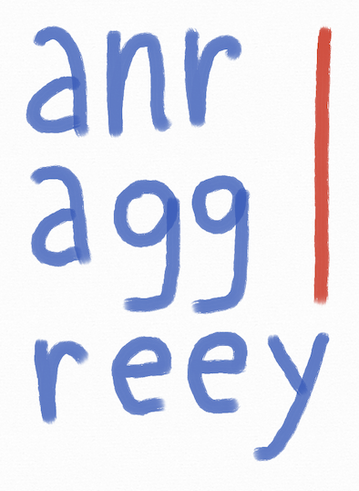

|  |
The Workshop on Argumentation and Online Debates is part of the activities and the final meeting of the AGGREEY project, which focuses on truth-tracking and evaluation in online argumentation. The aim is to explore the foundations and frontiers of computational models of argument, with a particular emphasis on how they apply to real-world debate platforms and collective decision-making. This event is a multidisciplinary forum, bringing together researchers in computer science, artificial intelligence, psychology, law, ethics, and communication studies to discuss the challenges and opportunities posed by online argumentative discourse. In addition to talks by invited speakers, the workshop will include contributed presentations by project members and other researchers from France and abroad, as well as panel discussions. |
| This project was funded by the French National Research Agency (ANR grant ANR-22-CE23-0005). | |
Date and Location
| When: | April 8-10, 2026 |
| Where: | Université Toulouse Capitole, |
| Manufacture des Tabacs, | |
| 21 allée de Brienne, Toulouse | |
| Room MS001 |

This workshop is collocated with the 2nd Workshop on Artificial Intelligence, Data, Algorithms and Law (April 7, 2025).
Keynote Talks
We are pleased to announce our first keynote speakers:
- Leila Amgoud (IRIT, CNRS)
Title: Tba
Abstract: Tba - Anthony Hunter (University College London)
Title: Tba
Abstract: Tba - Chris Reed (University of Dundee)
Title: Tba
Abstract: Tba
Submissions
If you want to present your work during the workshop, please send us an abstract describing the contribution that you will discuss.
- Format: 1 page (including references) pdf, using this template.
- Deadline: Tba.
- Submission by email: aggreey@irit.fr
Program
Tba.
Organisation
Program Chairs
- Victor David (INRIA, I3S, Université Côte d'Azur, victor.david@inria.fr)
- Jérôme Delobelle (Université Paris Cité, jerome.delobelle@u-paris.fr)
- Jean-Guy Mailly (Université Toulouse Capitole, jean-guy.mailly@irit.fr)
- Srdjan Vesic (CNRS, CRIL, Université d'Artois,vesic@cril.fr)
- Jean-Guy Mailly (Université Toulouse Capitole, jean-guy.mailly@irit.fr)
- Theo Alkibiades Collias
- Caren Al Anaissy
- Salem Benferhat
- Aurélie Beynier
- Elise Bonzon
- Maxime Brouat
- Elena Cabrio
- Victor David
- Jérôme Delobelle
- Quentin Elsaesser
- Sébastien Konieczny
- Marie-Jeanne Lesot
- Jean-Guy Mailly
- Nicolas Maudet
- Juliete Rossie
- Jordan Thieyre
- Ivan Varzinczak
- Srdjan Vesic
- Serena Villata
Practical Information
Contact
For any question about the workshop, you can contact us: aggreey@irit.fr.
Reaching Toulouse
Toulouse is easily reachable by flight (Aéroport Toulouse Blagnac), with direct flights from e.g. Algiers, Amsterdam, Brussels, Frankfort, Lisbon, London, Madrid, Marrakech, Milan, Munich, Roma, Tunis, and more, or from anywhere via connections in Paris Orly or CDG.
It can also be reached by train, arriving at Gare Toulouse Matabiau e.g. in 4h30 from Paris (Gare Montparnasse, with a connection in Bordeaux), in 4h from Marseille, or in 4h from Barcelona (with a connection in Narbonne).
Reaching the workshop
The Manufacture des Tabacs can be easily reached from the city center (for instance, 15 minutes walk from Place du Capitole, the main square in Toulouse), which means it is at walking distance from many hotels and restaurants.
If you choose an hotel further from the city center, you can take the bus or the metro to reach it. The station Compans-Caffarelli is within 15 minutes walking from the Manufacture. This is also the place where you may leave the bus from the airport.
Accommodation
Tba.
Restaurants
Tba.


#/media/Fichier:Toulouse_Capitole_Night_Wikimedia_Commons.jpg){kind=link}